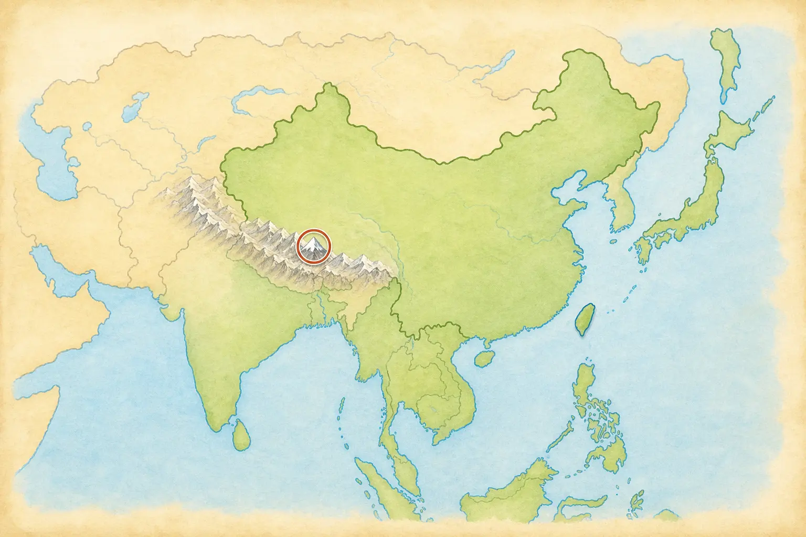
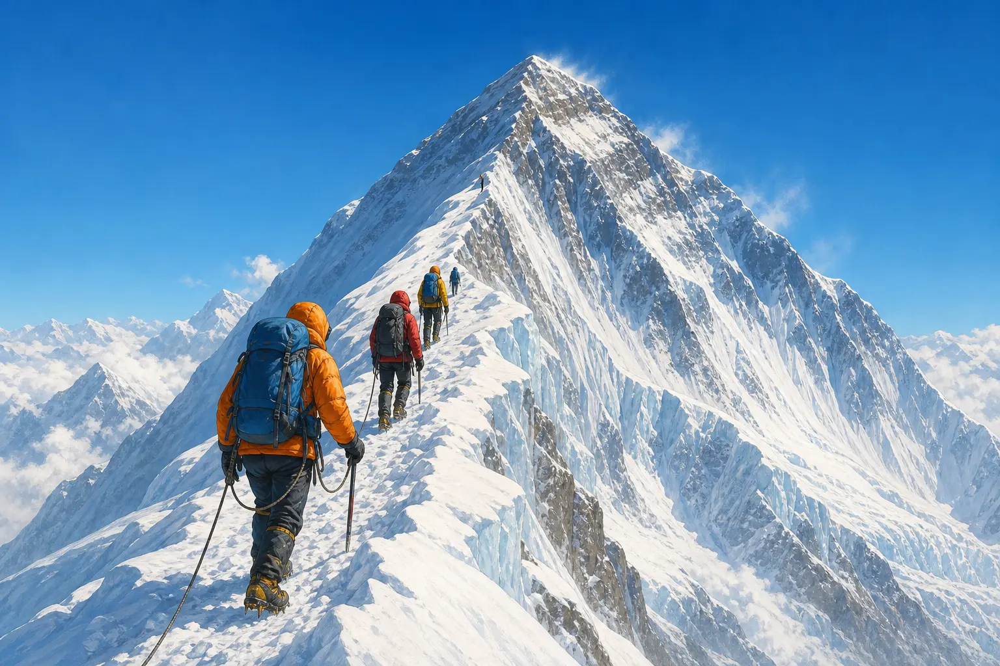
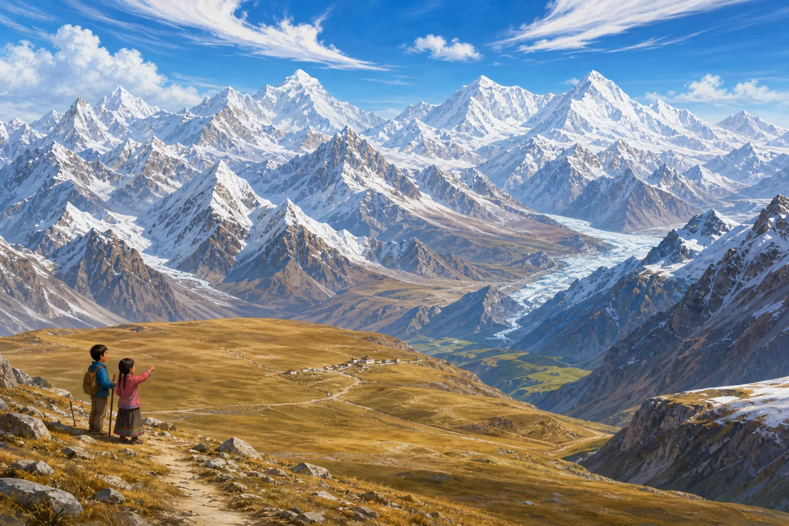

最高的山峰：一把尺子，三个答案
The Highest Mountain: One Question, Three Answers
阅读难度 · 困难Reading level · Hard
Page 1
8848.86米，从哪里量起？
8,848.86 Meters - Measured from Where?

This simplified map shows the Himalayas' general location in Asia. It is not a precise border or topographic map.
“世界最高的山是哪一座？”如果老师只要一个答案，你大概会写珠穆朗玛峰。2020年12月8日，中国和尼泊尔根据两国测量工作，共同宣布峰顶雪面的海拔是8848.86米，约合29032英尺。
可是，这个数字先要回答一个问题：从哪里量起？这里量的是“海拔”，也就是相对于共同海平面基准的高度。测量队不能从海边拉一根八千多米的卷尺。他们把卫星定位、峰顶测量、重力数据和水准测量等资料连在一起，再换算到共同的高程基准。峰顶积雪算不算进去、使用哪一种海拔基准，都会影响数字怎样表达。
换一把尺子，“最高”会有别的答案。夏威夷的冒纳凯阿山大部分藏在海面下，从海底基座到峰顶超过一万米；厄瓜多尔的钦博拉索峰靠近赤道，因为地球中间微微鼓起，它的峰顶比珠峰峰顶离地心更远。珠峰仍然是海拔最高的山峰，而不是每一种测量方法下唯一的“最高”。
“What is the world's highest mountain?” If a teacher wants one short answer, you will probably write Mount Everest, or Qomolangma. On December 8, 2020, China and Nepal announced a shared result from their survey work: the snowy summit is 8,848.86 meters, or about 29,032 feet, above sea level.
But that number first requires another question: measured from where? It is an elevation, meaning height above a shared sea-level reference. Surveyors cannot stretch a five-and-a-half-mile tape measure down to the beach. Teams connect satellite positioning, measurements on the summit, gravity data, and leveling work, then relate the results to a common height system. Whether the summit snow is included and which reference system is used both matter.
Change the ruler, and “highest” gets other answers. Most of Hawaii's Mauna Kea lies underwater, and it rises more than 10,000 meters from its base on the ocean floor. Ecuador's Chimborazo stands near the equator, where Earth bulges slightly, so its summit is farther from Earth's center than Everest's. Everest remains the mountain with the highest elevation above sea level. It does not win every kind of height measurement.
Page 2
一座界峰，不止一个名字
One Border Peak, More Than One Name
这座山的峰顶位于中国和尼泊尔的国界线上。北坡在中国西藏自治区，南坡在尼泊尔。说“两国共享山顶”容易让人误会成峰顶是一块没有边界的共同土地；更准确的说法是：国界经过峰顶，两国分别管理各自一侧，测量、科研和环境保护也需要合作。
名字同样记录着不同的视角。珠穆朗玛峰来自藏语地名，英文常写作 Qomolangma 或 Chomolungma。尼泊尔正式使用 Sagarmatha。英文名 Mount Everest 是英国皇家地理学会在1865年采用的，用来纪念曾任英属印度测量局负责人的乔治·埃佛勒斯。这个名字随着殖民测绘传播到世界各地，但山在那以前早已有当地名称。
因此，文章同时使用“珠穆朗玛峰／Qomolangma”和“Everest”，也承认尼泊尔的“Sagarmatha”。尊重名称不是挑一个词把其他词赶走，而是看见谁在什么语言和历史中称呼这座山。
The summit lies on the international boundary between China and Nepal. The northern side is in the Tibet Autonomous Region of China, and the southern side is in Nepal. Saying that the two countries “share the summit” can sound as if the top has no boundary. More precisely, the border passes across the summit, each country manages its own side, and the two cooperate on surveying, research, and environmental protection.
The names record different points of view too. The Chinese name, Zhumulangma, comes from the Tibetan name, commonly written in English as Qomolangma or Chomolungma. Nepal officially uses Sagarmatha. The Royal Geographical Society adopted the English name Mount Everest in 1865 to honor George Everest, a former Surveyor General of British-ruled India. Colonial surveying spread that name around the world, but local names existed long before it.
This article therefore uses both Qomolangma and Everest while recognizing Sagarmatha as well. Respecting names does not require pushing all but one aside. It means noticing who uses each name, in which language, and through which history.
Page 3
山在升高，也在被削低
The Mountain Rises - and Wears Away

This modern composite exaggerates flowers, forest, and snowy peaks in one view. It is not a real record of Everest's landforms or vegetation zones.
几千万年前，向北移动的印度大陆和亚洲相遇，地壳在挤压中缩短、加厚，并沿断层互相推叠，逐渐形成喜马拉雅山脉和青藏高原。珠峰峰顶附近确实有含海洋生物化石的石灰岩，这些岩石最初沉积在古代特提斯海的海洋环境中。不过，这不等于整块平坦海底像地毯一样被一次顶上天空；岩层经历了沉积、变形、断裂、推覆和长期抬升。
板块运动今天仍在继续，但山的高度不是每年整齐增加一个固定数字。地震能让局部地面突然移动，河流和冰川会侵蚀山谷，风化与山崩会带走岩石，地壳卸去重量以后还会调整。科学家甚至在研究附近河流的侵蚀是否帮助珠峰比周围山峰抬升得更快。测量年份、地点和时间尺度不同，得到的变化率也会不同。
高度还让气候和生物随着山坡发生变化。尼泊尔一侧的萨加玛塔国家公园，从较低的河谷到峰顶相差约六千米，森林、灌丛、高山草地、裸岩和冰雪会在不同高度出现。可是“从赤道走到北极”只能算夸张比喻：纬度、季风、坡向、降水和地形同样重要。峰顶附近气压大约只有海平面的三分之一，天气、风和温度变化很快，不能用一个“常年零下多少度”的数字概括。
Tens of millions of years ago, the north-moving Indian continent met Asia. The crust shortened, thickened, broke along faults, and stacked in great sheets, gradually building the Himalayas and Tibetan Plateau. Limestone near Everest's summit really does contain marine fossils and began as sediment in the ancient Tethys Ocean. But an entire flat seafloor was not pushed skyward like one rug. Those rock layers were deposited, deformed, faulted, thrust over one another, and lifted through a long geological history.
Plate movement continues, but the mountain does not grow by one neat number every year. Earthquakes can shift the ground suddenly. Rivers and glaciers cut valleys, while weathering and landslides remove rock. When erosion removes weight, the crust can also adjust upward. Scientists are even studying whether river erosion helps Everest rise faster than nearby peaks. A rate depends on the place, years, and process being measured.
Elevation also changes climate and life along the slopes. On the Nepal side, Sagarmatha National Park rises about 6,000 meters from its lower valleys to the summit. Forest, shrubs, alpine grassland, bare rock, and ice appear at different levels. Calling that “a trip from the equator to the Arctic” is only an exaggerated comparison. Latitude, monsoon rain, slope direction, and terrain matter too. Near the summit, air pressure is about one-third of pressure at sea level, while wind, weather, and temperature change rapidly. One exact “usual summit temperature” cannot describe the mountain.
Page 4
三次攀登，三种证据边界
Three Climbs, Three Kinds of Evidence

This is modern adventure art, not the route, equipment, or summit scene of the 1924, 1953, or 1960 expeditions.
1924年，英国登山者乔治·马洛里和安德鲁·欧文从北侧向峰顶攀登，最后一次被队友看见后便失踪了。马洛里的遗体后来被找到，2024年发现的部分遗骸被认为可能属于欧文，但没有证据解决最重要的问题：他们失踪前是否到过峰顶？所以这仍是谜，不能把“也许”写成第一次登顶。
1953年5月29日，新西兰登山者埃德蒙·希拉里和夏尔巴登山者丹增·诺尔盖从南侧到达峰顶，安全返回，并带回照片等记录。这被公认为第一次证据充分的成功登顶。成功属于两位搭档，也离不开整支远征队、搬运物资和建设营地路线的许多人。
“夏尔巴”首先是一个民族共同体的名称，不是“高山搬运工”的另一种说法。夏尔巴人在尼泊尔等喜马拉雅地区有自己的语言、家庭、宗教和多种职业；其中一些人成为高海拔向导和登山家。只把他们写成替外国登山者背东西的人，会抹去他们的专业判断、风险和生活。
1960年5月25日，中国登山队的王富洲、屈银华和贡布报告从北坡东北山脊到达峰顶，通常被记作人类首次从北坡成功登顶。因为队伍没有在黑夜中的峰顶拍下清楚照片，加上当时国际交流有限，一些外国登山界人士曾怀疑这次记录。后来，更多路线细节、访谈和中国1975年的北坡登顶使质疑逐渐减弱；今天中国官方、喜马拉雅数据库和主要登山史资料都接受1960年的登顶。交代早期质疑，并不等于把仍被广泛承认的记录重新说成“无法判断”。
In 1924, British climbers George Mallory and Andrew Irvine climbed toward the summit from the north and disappeared after a teammate last saw them high on the ridge. Mallory's body was found many years later. Partial remains found in 2024 are believed to be Irvine's, but they do not answer the central question: Did the pair reach the top before they vanished? It remains a mystery. “Perhaps” cannot be turned into a first ascent.
On May 29, 1953, New Zealand climber Edmund Hillary and Sherpa mountaineer Tenzing Norgay reached the summit from the south, returned safely, and brought back photographs and other records. Their climb is accepted as the first well-documented ascent. The achievement belonged to both partners. It also depended on a larger expedition and on many people who carried supplies and prepared camps and routes.
Sherpa is first the name of an ethnic community, not another word for “mountain porter.” Sherpa people in Nepal and other Himalayan areas have their own language, families, religion, and many kinds of work. Some become high-altitude guides and mountaineers. Describing them only as people who carry loads for foreign climbers erases their judgment, risk, skill, and lives.
On May 25, 1960, the Chinese team reported that Wang Fuzhou, Qu Yinhua, and Gonpo reached the summit by the Northeast Ridge from the north. This is generally recorded as the first successful ascent from that side. Because the team did not take a clear summit photograph in the darkness, and international contact was limited at the time, some foreign mountaineers initially doubted the report. Later route details, interviews, and China's better-documented 1975 north-side ascent quieted much of that doubt. Chinese official histories, the Himalayan Database, and major climbing histories now accept the 1960 ascent. Mentioning the early dispute does not mean the record is still treated as unknowable.
Page 5
十四座“八千米峰”在哪里？
Where Are the Fourteen Eight-Thousanders?

This modern imagined scene crowds many peaks into one valley. It is not a map of the fourteen eight-thousanders, and its people and village represent no specific community.
“八千米峰”是指海拔超过八千米、被传统名录分别计算的十四座主峰。这个门槛只是因为人类选择用“米”计量而显得整齐，并不是地球在八千米处画了一条特别的线。十四座峰全部位于亚洲的喜马拉雅山脉和喀喇昆仑山脉，并不都在青藏高原，也不都在中国。
把它们按国界整理会更清楚：珠穆朗玛峰、洛子峰、马卡鲁峰和卓奥友峰在中国 - 尼泊尔边界；干城章嘉峰在尼泊尔 - 印度边界；道拉吉里峰、马纳斯鲁峰和安纳普尔纳I峰在尼泊尔；K2、加舒尔布鲁木I峰、布洛阿特峰和加舒尔布鲁木II峰在中国 - 巴基斯坦边界；南迦帕尔巴特峰在巴基斯坦；希夏邦马峰在中国。
因此，尼泊尔涉及八座，中国涉及九座，巴基斯坦涉及五座，印度涉及一座；边界峰会同时计入两国，所以这些数字不能相加成十四。山脉也不会因为国界而在地质上断开，但地图、许可、救援和保护工作必须面对真实的国家边界。
An eight-thousander is one of the fourteen main peaks on the traditional list with an elevation above 8,000 meters, or 26,247 feet. That round dividing line looks important only because people chose meters as a unit. Earth did not draw a special stripe at 8,000 meters. All fourteen stand in Asia's Himalaya and Karakoram ranges. They are not all on the Tibetan Plateau, and they are not all in China.
Grouping them by borders makes the map clearer. Everest, Lhotse, Makalu, and Cho Oyu lie on the China-Nepal border. Kangchenjunga lies on the Nepal-India border. Dhaulagiri I, Manaslu, and Annapurna I are in Nepal. K2, Gasherbrum I, Broad Peak, and Gasherbrum II lie on the China-Pakistan border. Nanga Parbat is in Pakistan, and Shishapangma is in China.
That means Nepal is connected to eight, China to nine, Pakistan to five, and India to one. Border peaks count for both countries, so those numbers should not be added to make fourteen. A mountain range does not break geologically at a political border, but maps, permits, rescue work, and conservation must deal with real national boundaries.
Page 6
山顶不是奖杯，山脚也不是空地
The Summit Is Not a Trophy, and the Slopes Are Not Empty
珠峰上部是人类无法长期生存的极端环境。低气压让身体得到的氧气大幅减少，冻伤、急性高山病、雪崩、冰裂缝、坠落和突变天气都可能致命，撤退和下山同样危险。看完一段登顶故事，不应该得出“只要勇敢就能去”的结论；专业训练、长期适应、团队判断和及时放弃都比口号重要。
登山活动还会留下氧气瓶、帐篷、绳索、包装和人的排泄物。尼泊尔珠峰地区的萨加玛塔污染控制委员会由当地人组成，长期参与垃圾管理、登山线路维护和环境教育。科学家已经在珠峰的雪和溪水样本中发现微塑料。把垃圾运下高山既危险又昂贵，所以“我带上去的东西要负责带下来”不是一句轻松的宣传语，而是保护工作的一部分。
与此同时，气候变暖正在改变冰川、积雪、融水和灾害风险。2022年的研究发现，海拔约8020米的南坳冰川正在快速失冰。变化影响的不只是远方登山者，还影响山谷里的夏尔巴等社区、植物、动物和下游用水者。珠峰不是一座等人征服的空白金字塔；它是边界、家园、水源、文化空间，也是正在变化的地球系统。
Everest's upper slopes are an extreme environment where people cannot live for long. Low air pressure sharply reduces the oxygen available to the body. Frostbite, altitude illness, avalanches, crevasses, falls, and sudden weather can all kill, and retreating can be as dangerous as climbing up. A summit story should not teach, “Anyone brave enough can go.” Training, gradual adjustment to altitude, team judgment, and the decision to turn back matter more than a slogan.
Climbing also leaves oxygen cylinders, tents, ropes, packaging, and human waste. The Sagarmatha Pollution Control Committee, created by people of Nepal's Everest region, works on waste management, route preparation, and environmental education. Scientists have found microplastics in snow and stream samples on Everest. Carrying waste down is dangerous and expensive, so “take responsibility for what you bring” is part of real conservation work, not an easy advertising line.
At the same time, a warming climate is changing glaciers, snow, meltwater, and hazards. A 2022 study found rapid ice loss at South Col Glacier, about 8,020 meters above sea level. These changes affect more than visiting climbers. They matter to Sherpa and other valley communities, plants, animals, and people who depend on water downstream. Everest is not an empty pyramid waiting to be conquered. It is a border, a homeland, a water source, a cultural place, and part of a changing Earth system.
再问一次：“最高”是什么？
Ask Again: What Does “Highest” Mean?
现在再看8848.86米，你看见的不该只是一项纪录。这个数字有起点、有测量方法、有雪面和年份；山也有多个名字、两侧国界、复杂地质和生活在附近的人。
珠穆朗玛峰是世界上海拔最高的山峰。可是理解它，不是把“第一名”背下来就结束，而是继续追问：尺子从哪里开始？证据能说明到哪一步？谁承担登山的风险？一座不断变化的山，该由谁一起保护？
Look again at 8,848.86 meters. It is more than a record. The number has a starting point, a measurement method, a snowy surface, and a date. The mountain has several names, an international border, a complicated geology, and communities living around it.
Qomolangma is the world's highest mountain above sea level. Understanding it does not end with memorizing first place. Better questions follow: Where does the ruler begin? How far does the evidence reach? Who carries the risks of climbing? Who must work together to protect a mountain that keeps changing?